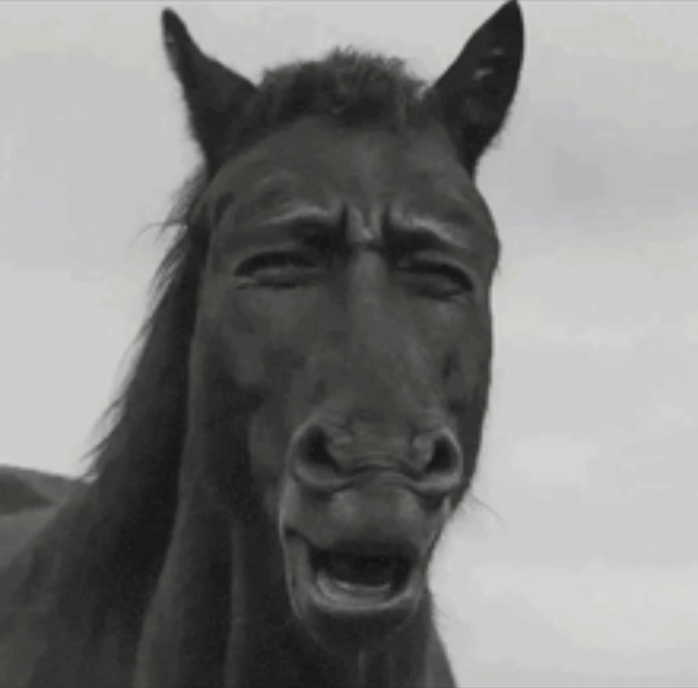
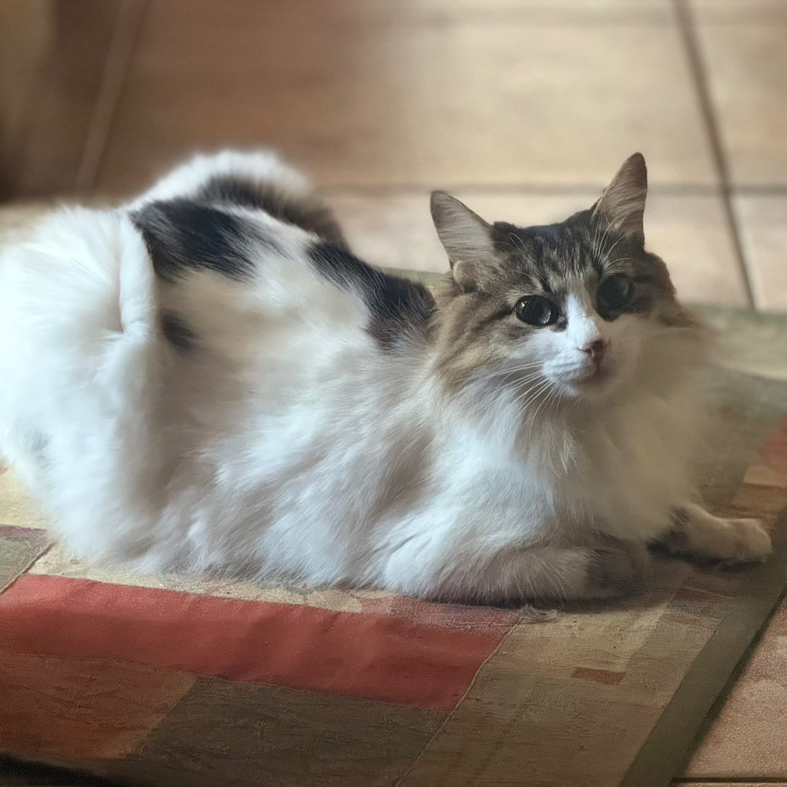

Olá, me chamo João Pedro 👋
Estudante de Engenharia & Entusiasta de Desenvolvimento
Desenvolvedor em formação movido a riffs de heavy metal, cultura automotiva e sessões de skate. Quando não estou resolvendo problemas no terminal ou otimizando linhas de código, estou aprendendo novas músicas, montando setups disputando partidas competitivas em games. Se não estiver fazendo nada disso, com certeza me encontrará em um show extremamente duvidoso...
Curiosidades & Interesses
Setup & Dev
Fã de código limpo, hardware sob medida e projetos desafiadores.
Games & Lazer
Partidas competitivas muito raramente, meu foco é em side quests. Fromsoftware lover S2
Música
Cresci no metal mas nos ultimos anos ando meio emo
Skate
Gosto mais do que sou bom, manobras mal feitas (e branço quebrado), mas o importante é a atitude. "Marginal alado"
Gatos
Tenho uma gata chamada Agnes. Ela parece um pouco comigo (não gosta de nada)

Automobilismo
Amo carros e corridas, especialmente no estilo de rua, mas um circuito às vezes vai...
Modo Turbo Ativado!